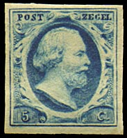
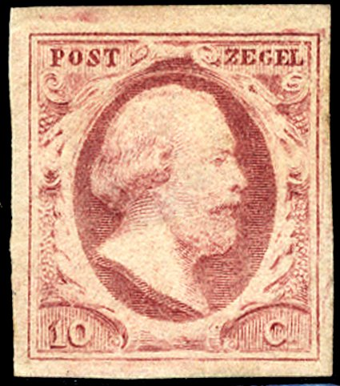
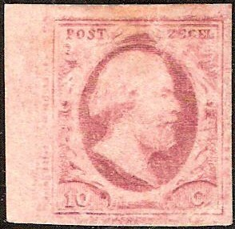
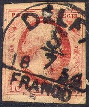
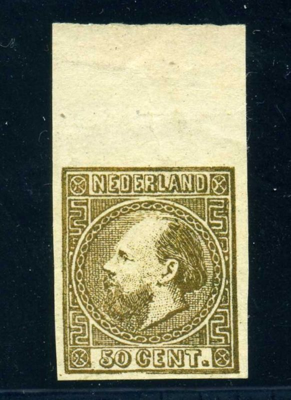
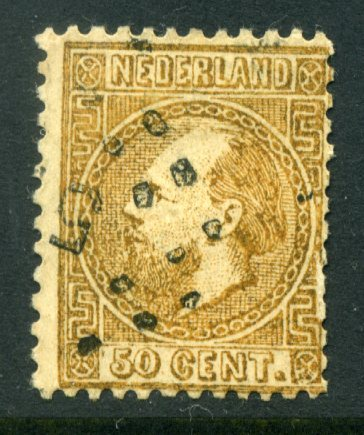
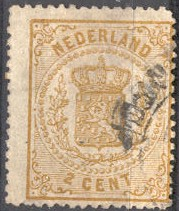

Nederland - Pays-Bas - Niederlande
Return To Catalogue - Issues of 1872-1897 - Issues of 1898-1906 - Issues of 1907-1924 - Issues of 1925 onwards - Fiscal Stamps - Miscellaneous - Numeral cancels with dots - Small circular cancels - Postage Due stamps - Netherlands Indies - Netherlands New Guinea - Curacao - Surinam
Note: on my website many of the
pictures can not be seen! They are of course present in the
catalogue;
contact me if you want to purchase it.
Currency: 100 Cent = 1 Gulden
The Netherlands (also sometimes referred to as 'Holland') is a country is Western Europe. The capital is Amsterdam. The first stamps had the inscription 'POSTZEGEL'.



5 c blue 10 c red 15 c orange
The stamps have watermark 'Posthorn' and first appeared on 1 January 1852.
Value of the stamps |
|||
vc = very common c = common * = not so common ** = uncommon |
*** = very uncommon R = rare RR = very rare RRR = extremely rare |
||
| Value | Unused | Used | Remarks |
| 5 c | RR | *** | |
| 10 c | RR | ** | |
| 15 c | RR | R | |
Non-official reprints ere made by A Moesman in 1896 of the 10 c value in various colours. The reprints have no watermark. Some of them have "NADRUK" printed on the backside. Examples:

Moesman reprint of the 10 c red value
Moesman reprints of the 10 c value in blue and orange; I have
also seen a vertical pair of 10 c red Moesman reprints.
Front and back of a sheet of Moesman reprints.
Typical cancellation: "FRANCO" in rectangle and
"NA POSTTIJD" (after closing time) in rectangle. The
"FRANCO" cancel also exists in a different type without
the rectangular enclosure.

Town name and 'FRANCO' cancel on a 5 c stamp, reduced size.
So-called 'Langstempel' or town name in a straight line
I've seen 'Langstempels' for several other towns: Eibergen, Gorredijk, s'Heerenberg, Irnsum, Nes, Rhoon, Smilde, Vollenhove, Winsum. Others probably exist. They also exist on the 1864 issue.
A 'reprint' made in 1984 for the 'Salon der Philatelie' in
Hamburg (Germany).

Zoom-in of this 'Reproduction'
5 c blue 10 c red 15 c orange
These stamps are perforated 12 1/2 x 12 and appeared on 12 May 1864.
Value of the stamps |
|||
vc = very common c = common * = not so common ** = uncommon |
*** = very uncommon R = rare RR = very rare RRR = extremely rare |
||
| Value | Unused | Used | Remarks |
| 5 c | *** | * | |
| 10 c | *** | * | |
| 15 c | RR | *** | |

Some kind of forgery

Very badly printed 5 c brown, pretending to be a proof. However,
the inscription has several errors "NEDERLANDE" should
be "NEDERLAND" and "CENTS" should be
"CENT". I've also seen this stamp in the colors blue,
red and green .
5 c blue 10 c red 15 c brown 20 c green 25 c violet 50 c brown
These stamps exist with several perforations. Specialists distinguish two types of the value inscription for each value. They first appeared on 1 October 1867.
Value of the stamps |
|||
vc = very common c = common * = not so common ** = uncommon |
*** = very uncommon R = rare RR = very rare RRR = extremely rare |
||
| Value | Unused | Used | Remarks |
| 5 c | *** | c | |
| 10 c | *** | c | |
| 15 c | R | *** | |
| 20 c | *** | ** | |
| 25 c | R | *** | |
| 50 c | RR | R | |
A very strange cancel:
Forgeries:

(Fournier forgery)
There exist forgeries made by Fournier of the 50 c stamp. I do not know if these forgeries were always imperforated. Genuine imperforate stamps do not exist.
 

Forgery listed in the book by P.v.d. Loo on forgeries; it has the
bottom frameline tripled and broken below the "50" and
"CENT". The neckshading is wrong and the background
behind the head is too well done.
According to www.bondskeuringsdienst.nl/BKD.pps, the stamp forger Pierre Vos also made forgeries of the 50 c and also made imperforate 'proofs'.

Could this be Pierre Vos reprints?


1/2 c brown (1870) 1 c black 1 c green 1 1/2 c red 2 c yellow 2 1/2 c lilac
These stamps exist with several perforations. They were intended to be used on newspapers and the first values appeared on 1 January 1869.
Value of the stamps |
|||
vc = very common c = common * = not so common ** = uncommon |
*** = very uncommon R = rare RR = very rare RRR = extremely rare |
||
| Value | Unused | Used | Remarks |
| 1/2 c | * | c | |
| 1 c black | *** | *** | |
| 1 c green | * | c | |
| 1 1/2 c | *** | ** | |
| 2 c | * | * | |
| 2 1/2 c | *** | *** | |
A typical double ring cancel with 'FRANCO' at the bottom outside
the outer ring ('Frankotakje stempel'). The word 'Takje' refers
to the ornaments in the bottom part of the circle which resemble
sticks of wood with leafs.
I've seen this Francotakje Stempel for the following towns: Alphen, Amersfoort, Amsterdam, Assen, Bergen op Zoom, Bodegraven, Delfshaven, Delft, Deventer, Doesborgh, Doetinchem, Dokkum, Dordrecht, Driebergen, Edam, Eindhoven, Enschede, Franeker, Goes, Grave, 'sGravenhage, Haarlem, Harderwijk, Heerenveen, Heerlen, 'sHertogenbosch, Heusden, Hoorn, Kampen, Leerdam, Leeuwarden, Maarssen, Nijmegen, Noordwijk, Onderdendam, Oudenbosch, Rijssen, Rozendaal, Schiedam, Sittard, Sluis, Sneek, Steenbergen, Steenwijk, Ter-Neuzen, Tiel, Utrecht, Veendam, Venlo, Vianen, Vlaardingen, Wageningen, Weert, Willemstad, Workum, Wormerveer, Zaandam, Zierikzee.
I've seen some 'reprints' with inscription "HAGAPOST 1969" in black issued for the National Exhibition in The Hague in 1969.
gestempeld = cancelled
getand = perforated
herdruk = reprint
kopdruk = inverted print
nadruk = reprint
Nederland = The Netherlands
nvph = Nederlandse Vereniging van Postzegel Handelaars (Dutch
association of stamp dealers)
ongetand = imperforate
plakker = hinge
postfris = unused with no hinge
postzegel = stamp
roltanding = syncopated perforation
samenhangend = se-tenant
stempel = cancel
tanding = perforation
te betalen port = to be paid (text on postage due stamps)
vals = forged
vervalsing = forgery
verzamelen = to collect
verzameling = collection
voor het kind = child welfare stamps ('for the child')
Recently (2005), a lot of so-called 'facsimiles' are offered on Internet auctions of many stamps of the Netherlands and Netherlands Indies, examples of such 'fac similes':

Even facsimiles of proofs are offered, reduced sizes
Book: P.F.A.van de Loo: 'De vervalsingen van Nederland en O.G.', Hilversum 1979. The reference work on forgeries of the Netherlands.
www.verzamel.com, www.postzegels.net: stamp auctions and lots of information.
Stamps - Postzegels - Briefmarken - Timbres-Poste


{kind=link}
{kind=link}
{kind=link}
{kind=link}
{kind=link}
{kind=link}